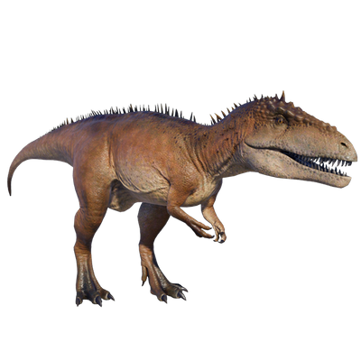

Useful Website
Carcharodontosaurus is a carnivorous theropod dinosaur that existed during the Late-Cretaceous Period, around 95-100 million years ago. At around 15m in length, Carcharodontosaurus is one of the largest theropods, and gets its name – which translates to ‘jagged teeth lizard’ - from its teeth, which can grow up to eight inches.
